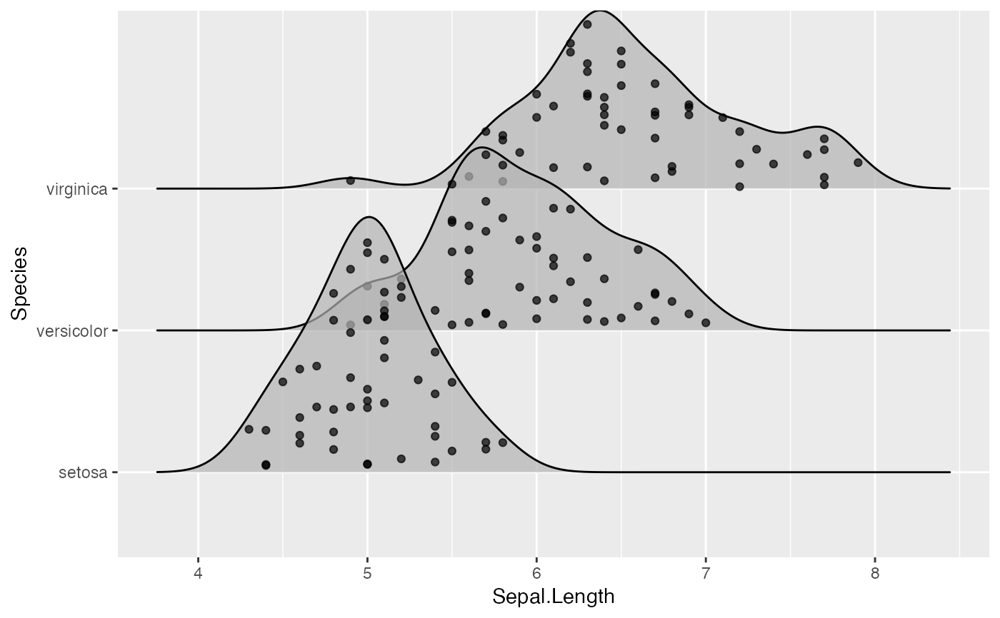

R/position.R
position_points_sina.RdThis is a position adjustment specifically for geom_density_ridges() and related geoms. It
only jitters the points drawn by these geoms, if any. If no points are present, the plot
remains unchanged. The effect is similar to a sina plot: Points are randomly distributed to fill
the entire shaded area representing the data density.
position_points_sina(rel_min = 0.02, rel_max = 0.98, seed = NULL)The relative minimum value at which a point can be placed.
The relative maximum value at which a point can be placed.
Other position adjustments for ridgeline plots: position_points_jitter, position_raincloud
library(ggplot2)
ggplot(iris, aes(x = Sepal.Length, y = Species)) +
geom_density_ridges(jittered_points = TRUE, position = "points_sina", alpha = 0.7)
#> Picking joint bandwidth of 0.181
